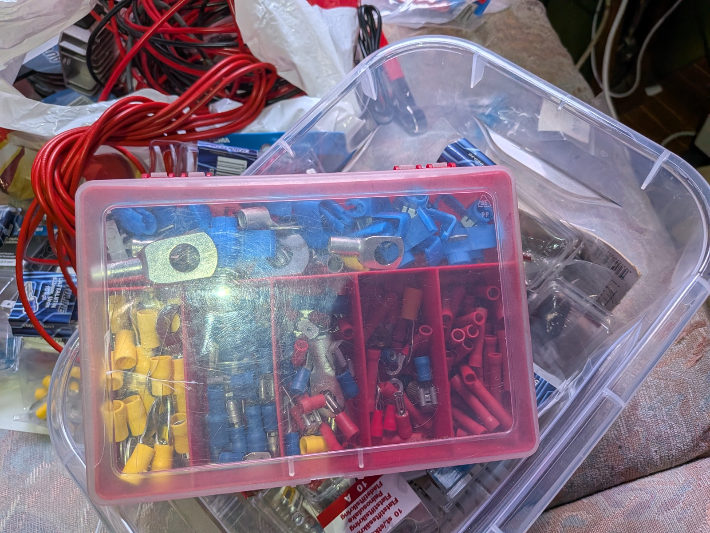
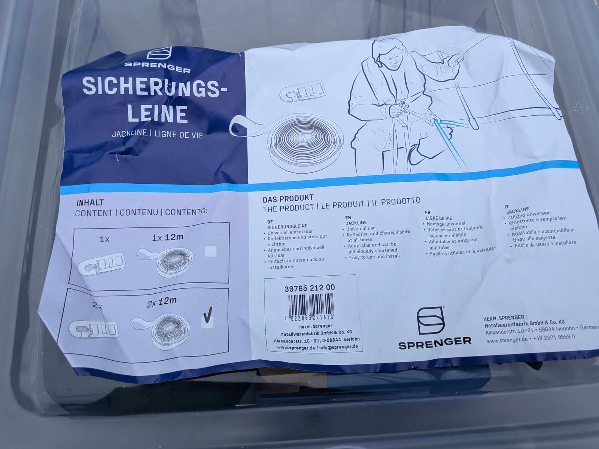

Thirty minutes at a time
Last time I wrote about crossing the Baltic, the piece was mostly about fear. A leak, a jammed halyard, seasickness, a bilge pump that pumped nothing, and towards the end a shelf cloud with two waterspouts hanging from it. A friend read it and asked, reasonably, why anyone would do this voluntarily. I owed him an answer. This is the attempt.
We left Ventspils in better shape than we arrived. The marina staff and I had spent days on the unglamorous end of sailing: adjusting the stuffing box, realigning the propeller shaft so the engine no longer shook itself along, fitting a second electric bilge pump, securing the batteries so they would stay where batteries should. The staff there deserve a sentence of their own, and harbour manager Lienards deserves several: the man is pure gold, endlessly helpful, and with him everything is possible. I rigged jacklines along the deck, the webbing straps you clip your harness to so that falling overboard becomes inconvenient rather than final. None of this is romantic. All of it is why the rest of the story is calm.
Hauled out in Ventspils for the shaft realignment.
The unglamorous end: the old stuffing box and propeller shaft.
And the new one.
Going back in.


Supplies of the week: crimp connectors for the second bilge pump and the battery work, and the jacklines, still in their wrapper the day before departure.
At the breakwater, a little after six in the morning, we passed the Stena ferry coming in. The same ship, as far as I could tell, that had filled the harbour mouth the day we arrived, back when I had a shelf cloud astern, two waterspouts hanging from it, and no appetite at all for sharing the entrance. Of all the hours in all the weeks between, it chose this one to come back. Ventspils has a sense of humour, or ferries simply keep schedules. I prefer the first explanation.
The plan was simple on paper. North along the Latvian coast, past the mouth of the Irbe Strait, up the outside of Saaremaa and Hiiumaa, then a right turn towards the Estonian mainland and the small harbour of Dirhami. A hundred and fifty-four miles. Alone this time.
The first day was grey. Overcast, a thin persistent drizzle, and an old, disorganised swell left over from weather that had already moved on, so the boat rolled about in winds that did not justify it. Every sea does this. The storm moves on and leaves its waves behind, unfinished business for whoever comes next. The Baltic's version is short and steep and finds the boat at awkward angles.
The day's only mishap revealed itself quietly: I had forgotten to switch the Starlink to ocean mode, so a little way offshore the internet simply stopped. Sailors managed without it for a few thousand years, and mostly it is a luxury; I have it for working in harbours with bad bandwidth. It annoys me no end that I am funding that utterly unserious man, but so far there is no alternative. Out at sea, though, the luxury earns its keep in small, unglamorous ways: weather radar on demand, and the AIS positions of ships far beyond what my VHF can hear, which is not much, given how the antenna is mounted. Luckily, passing five or six miles off the northwestern corner of Saaremaa in the evening, I came close enough to the shore to pick up coverage again, and could switch on ocean mode: a metered arrangement where you pay two euros for every gigabyte streamed.
And towards evening, before the light went, the sky gave me something to spend it on. Cumulus towers rising high ahead and to the west, and a rain band forming up to the northwest, roughly along my track. I studied the cells first by eye and then on the weather radar. The heaviest rain had already fallen, and the cell looked to be dying. With a bit of luck it was also moving faster than me, and would pass ahead and miss me altogether. A second, nastier squall line to the southwest was heading southeast, away from me. I went through the reasoning twice and decided the night could be lived with.
The evening sky, read twice: the dying cell on the horizon, roughly along the track.
I turned out to be half right. The cell was dying, but it was not faster than me, and while there was still light in the sky I sailed straight into it. By then the rain had finished, only just. What was left was a push of wind, not too much of it, and quickly over. I never touched the reefing lines. As forecast errors go, I will accept this kind.
This, I think, is part of the answer. Reading a sky, checking your reading against the radar, making your best guess, and living with the result. Judgment you have built yourself, on a boat you have bolted together yourself.
Then darkness came, and with it the rough part of the passage. The waves were now straight on the nose, which slowed us down and turned the motion into a proper rodeo, helped along by the one fault this model is infamous for, a certain enthusiasm in the roll. The log is blunt about the cost: five knots at supper time, barely three by the time the light went, and there it stayed for most of the night. The thirty-minute rhythm began: timer, up the companionway, scan the horizon, check the sails, check the course, back down. It is a strange way to spend a night, surfacing every half hour to check on the world. Mostly the world is fine and you go back to sleep.
Mostly. On a good night I am asleep the second I stumble back to the bunk and close my eyes. This was not that night. Trying to sleep on the saloon settee was like trying to sleep on the back of a rodeo bull, with the difference that a bull gives up after eight seconds, and although the distance from the bunk to the cockpit is a few metres at most, hauling yourself there and back against that motion is a short session at the gym. Every half hour. So I slept worse than I have on earlier passages. Nothing dramatic in it, though. I felt safe, and in as much control as you ever are on a sailing boat, which is to say none at all, but with nothing in particular to worry about.
A minute before five I came up for one of these checks. No ships. Course good. And when I looked out past the starboard bow, at that exact moment, the sun came up. Not a glow that had been building, not a sunrise I had been waiting for. The rim of it broke the horizon in the seconds I happened to be standing there, five miles off the Kõpu peninsula, on a sea that had been grey and difficult all night. I had done nothing to deserve the timing. A kitchen timer had sent me up the ladder, and the sun kept the appointment.
The sea it rose over was nothing like a postcard. Dark blue running to black, the waves short and steep, the surface standing in jagged facets of those two colours. The horizon was not so much visible as inferred. Towards the sun the water itself seemed to rise, a slope of sea lifting into the light. Not a kind sea, and not an angry one. Respectable. The kind you address by its surname.
I did not have my phone in the cockpit, and the reflex stirred anyway: go below, get it, film this. Standing there, I remembered instead being twenty-one, in Turku in the early nineties, living beside the railway bridge over the river. I spent a string of early mornings on that bridge with a Super 8 camera, filming time-lapse sunrises. Those mornings were among the most beautiful things I had done, and a lot of work: the alarm, the timing calculations, the waiting in the cold, the rig. When the film came back from developing, the beauty in it was real, but it was a different beauty, transformed into Super 8 reality, something the camera had made. The mornings themselves had stayed on the bridge.
So the phone stayed below. This sunrise had been handed to me for nothing. No alarm, no tripod, no waiting; a gift, and the only honest response was to stand there and accept it. A camera would have brought back something else. Words do better with this kind of cargo, and even they sit low in the water. I watched until the sun was properly up, which cost me most of the next nap. Worth it.
After that the passage simply turned kind. The sea flattened through the morning as if the night had been someone else's story. The air warmed, then the water. We rounded the top of Hiiumaa and turned east, and the second day became the sort of sailing they put in brochures: warm, bright, slightly short of wind, entirely without complaint. I sat in the cockpit in the sun and did very little, expertly.
Dirhami appeared in the late afternoon, a small harbour on a quiet stretch of Estonian coast. We came in a little before five, thirty-four and a half hours out of Ventspils, with nothing broken and nothing to confess. I tied up, opened a cold sparkling water, and sat on deck for a long time.
Tied up in Dirhami, thirty-four and a half hours out.
Why does anyone do this? Because most of the time sailing gives you exactly what you worked for and nothing more. And then, once in a while, at five in the morning, it hands you something you did not order at all, precisely on time.